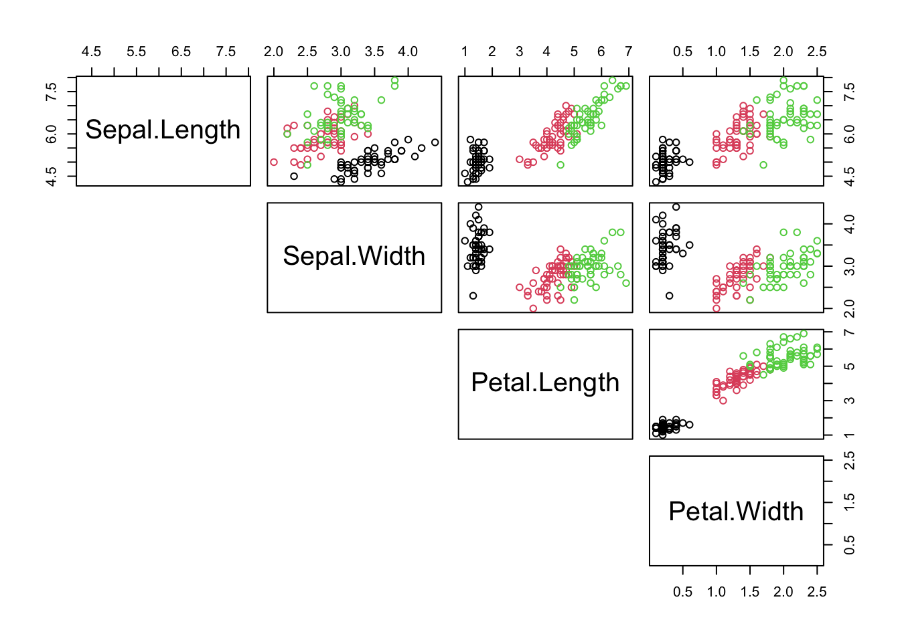

Code
library(tidyverse)
library(pheatmap)
library(patchwork) # combine plots
source("misc/convenience_functions.R")library(tidyverse)
library(pheatmap)
library(patchwork) # combine plots
source("misc/convenience_functions.R")iris %>%
select(-Species) %>%
plot(col=iris$Species, lower.panel=NULL) # remember how colour assignment works
Goal: Use some variables in the data to predict others.
Jargon Alert: “predictors” (“independent variables”, \(X\)) predict “responses” (“dependent variables”, \(Y\)).
Abundance (of Models and Software): Linear Regression, Logistic Regression, (Deep) Neural Networks, …
Causality Alert: a good, complex, deep or even perfect model does not mean that we found a causal connection \(X \to Y\).
p <- iris %>%
ggplot(aes(x=Petal.Length, y=Petal.Width, colour = Species)) +
geom_point()
p
Model \(y_i\) as a linear function of \(x_i\)
\[ \begin{array}{ll} y_i &= f(x_i, \theta) + \epsilon_i = \theta_0 + \theta_1 x_i + \epsilon_i ~~~~~~~~~~ i = 1 \ldots n \\ \epsilon_i &\sim N(0, \sigma^2) \end{array} \]
and in matrix form (also for multiple variables)

\[ Y = X \theta + \epsilon \]
For \(n\) data points, choose parameter vector \(\theta\) by ordinary least squares:
\[ RSS(\theta) = \sum_{i=1}^{n} (y_i - f(x_i, \theta))^2 = \sum_i \epsilon_i^2 = \epsilon^T \epsilon \to min \]
set.seed(42)
xr <- seq(-3, 3, by=0.1)
# Generate parameter combinations and linear functions over xr
result <- params_func(5, pr=c(-2,2,-2,2,0,0), xr=xr)
# Create xy-plot
plot_xy <- result$func %>%
ggplot(aes(x = x, y = y, color = point)) +
geom_line() +
labs(title = "X-Y Space: Linear Functions") +
theme_minimal() +
theme(legend.position = "none")
# Create parameter space plot
plot_param <- result$params %>%
ggplot(aes(x = beta0, y = beta1, color = point)) +
geom_point(size = 2) +
labs(title = "Parameter Space: Models", x = "β0", y = "β1") +
xlim(-5, 5) + ylim(-5, 5) +
theme_minimal() +
theme(legend.position = "none")
# generate data from quadratic function with one parameter combination + noise
# for a range of x values in xr
res <- params_func(1, pr=c(1,1,2,2,0.5,0.5), xr=xr)
data <- res$func %>% mutate(yd = y + rnorm( n() ))
# plot data
plot_data <- ggplot(data, aes(x = x, y = yd)) +
geom_point(alpha=0.3) + # data
geom_line(aes(y = y), linetype = "dashed") + # true function
geom_smooth(method='lm', formula='y~x', colour="lightblue") + # best linear fit
labs(title = "X-Y Space: Sampled Data", x="x", y="y") +
theme_minimal()
# calculate Residual Sum of Squares for each combinations (beta0, beta1) in grid
beta0_seq <- seq(-5, 5, length.out = 100)
beta1_seq <- seq(-5, 5, length.out = 100)
grid <- expand_grid(beta0 = beta0_seq, beta1 = beta1_seq) %>%
mutate(RSS = map2_dbl(beta0, beta1, function(b0, b1) {
sum((data$yd - (b0 + b1 * xr))^2)
}))
# Plot RSS + contour
plot_rss <- ggplot(grid, aes(x = beta0, y = beta1, z = RSS)) +
geom_tile(aes(fill = RSS)) + geom_contour(color = "grey") +
scale_fill_gradient(low = "lightblue", high = "red") +
labs(title = "Parameter Space: RSS Contours", x = "β0", y = "β1") +
theme_minimal() +
theme(legend.position = "none")
plot_xy + plot_param + plot_data + plot_rss + plot_layout(ncol = 2)For linear regression, \(f(x,\theta) =X \theta\), there is an explicit formula for the parameters \(\hat \theta\) and \(\hat \sigma\)
\[ \begin{array}{ll} \hat {\theta} &= (X^TX)^{-1} X^T Y\\ \hat {\sigma}^2 &= \epsilon^T \epsilon / (n-p) = RSS /(n-p) \end{array} \]
Remaining sampling fluctuation around \(\hat y\) (measured by \(\hat \sigma\)) also induced uncertainties in the parameter estimate (error propagation)
\[ Cov(\theta) = \hat \sigma (X^TX)^{-1} \]
Given sampling fluctuations, and the corresponding uncertainty in the parameter estimate, we want to quantify our surprise for \(\hat {\theta} \ne 0\) assuming that \(\theta=0\). This can be done by a confidence interval
\[ \hat {\theta} \pm c \cdot \sigma_\theta \] There choice for \(c\) is arbitrary and it corresponds to our desired level of confidence that the “true” parameter \(\theta\) is contained within this interval (\(c=1.96\) is a popular choice).
Often we are interested if the confidence interval contains zero (no dependence). The p-value denotes the probability that zero is outside the region, even if the true value \(\theta=0\)
This is very easy in R: lm()
# fit a linear model
model <- lm(Petal.Width ~ Petal.Length, data=iris)
model
Call:
lm(formula = Petal.Width ~ Petal.Length, data = iris)
Coefficients:
(Intercept) Petal.Length
-0.3631 0.4158 model?model object?model %>% summary
Call:
lm(formula = Petal.Width ~ Petal.Length, data = iris)
Residuals:
Min 1Q Median 3Q Max
-0.56515 -0.12358 -0.01898 0.13288 0.64272
Coefficients:
Estimate Std. Error t value Pr(>|t|)
(Intercept) -0.363076 0.039762 -9.131 4.7e-16 ***
Petal.Length 0.415755 0.009582 43.387 < 2e-16 ***
---
Signif. codes: 0 '***' 0.001 '**' 0.01 '*' 0.05 '.' 0.1 ' ' 1
Residual standard error: 0.2065 on 148 degrees of freedom
Multiple R-squared: 0.9271, Adjusted R-squared: 0.9266
F-statistic: 1882 on 1 and 148 DF, p-value: < 2.2e-16Total Sum of Squares (Mean-only Model):
\[ TSS = \sum_i(y_i - \bar y)^2 \]
Fraction of variation explained by new model (\(R^2\)):
\[ R^2 = \frac{TSS-RSS}{TSS} = 1 - \frac{RSS}{TSS} = 1 - \frac{\sum_i(y_i - \hat y_i)^2}{\sum_i(y_i-\bar{y})^2} \]
F-statistics \[ F = \frac{(TSS-RSS)/(p-1)}{RSS/(n-p)} \]
The linear regression has minimzed the residual sum of squares \(RSS\). Below I visualize (in red) the remaining residual errors as deviations of the fitted line from the true data. I also compare it to the mean model where no dependency on X=Petal.Length is used.
mu = iris$Petal.Width %>% mean
p1 <- iris %>%
mutate(mean = mu) %>%
ggplot(aes(x = 0, y = Petal.Width)) +
geom_point() +
geom_hline(yintercept=mu, colour="blue") +
geom_segment(aes(xend = 0, yend = mean), color = "red") +
theme(
axis.title.x = element_blank(),
axis.text.x = element_blank(),
axis.ticks.x = element_blank()) +
ggtitle('Mean Model')
p2 <- iris %>%
mutate(predicted = predict(model, iris),
residuals = residuals(model)
) %>%
ggplot(aes(x = Petal.Length, y = Petal.Width)) +
geom_point() +
geom_line(aes(y=predicted), color="blue") +
geom_segment(aes(xend = Petal.Length, yend = predicted), color = "red") +
ggtitle('Linear Model: Residual Sum of Squares')
p1 + p2 + plot_layout(widths = c(1, 3))Task:
Plot the histogram of the residuals
Uncertainties in model parameters become uncertainties in prediction:
# if newdata=NULL it will be set to the training data
pred <-predict(model, newdata=iris, interval = 'confidence' , level = 0.82)
pred %>% head fit lwr upr
1 0.2189821 0.1810040 0.2569601
2 0.2189821 0.1810040 0.2569601
3 0.1774065 0.1383862 0.2164268
4 0.2605576 0.2236061 0.2975091
5 0.2189821 0.1810040 0.2569601
6 0.3437087 0.3087576 0.3786598Question: What is meant by those numbers?
Let’s add the upper and lower values to the plot.
p +
geom_line(aes(y=pred[,'lwr']), colour=1) +
geom_line(aes(y=pred[,'upr']), colour=1)aes(y=...).A similar result could also be achieved more easily with the geom_smooth() method from ggplot2.
p +
geom_smooth(method="lm", se=TRUE, level=0.95, colour="darkgrey")The variation of the data is clearly larger than suggested by the confidence interval shown above.
It is important to remember that in our example there are two components of variations:
\[ ||Y - \bar{Y}||^2 = ||Y-\hat{Y}||^2 + ||\hat{Y} - \bar{Y}||^2 \]
the variance explained by the linear model: \(||\hat{Y} - \bar{Y}||^2\) where \(\hat{Y} = X \hat \theta\). In this context errors in \(\hat \theta\) will induce errors in Petal.Width.
the unexplained variance \(||Y-\hat{Y}||^2 = ||\epsilon||^2\) that remains unaccounted but where \(\epsilon = (Y-\hat{Y}) \propto N(0,\sigma^2)\)
To visualize the full prediction interval we can use the following approach that modifies the parameters within the predict function:
pred <-predict(model, newdata=iris, interval = 'prediction' , level = 0.893)
cbind(iris, pred) %>%
ggplot(aes(x=Petal.Length)) +
geom_point(aes(y = Petal.Width, colour=Species)) +
geom_ribbon(aes(ymin = lwr, ymax = upr), alpha = 0.2) +
geom_line(aes(y = fit)) +
ggtitle('Prediction Interval')Notice: The prediction interval covers the broader variability of the data. But as with the confidence interval, the level can be set at will. A common but arbitrary choice is 0.95
Reference:
The confidence interval denotes the range within which we expect the expected means to lie \(\hat y(x) = E[y(x)]\).
The prediction interval also includes the residual variance \(\sigma^2\)
\[ \begin{array}{ll} \hat y & = X\theta \\ Cov(\hat \theta) &= \sigma^2 (X^TX)^{-1} \\ Cov(\hat y) &= X \cdot Cov(\hat \theta) \cdot X^T = \sigma^2 X(X^TX)^{-1} X^T \\ SE(\hat y) &= \sqrt{diag(Cov(\hat y))} \\ CI: & \hat{y} \pm ~t_{n-2} \cdot SE(\hat{y}) \\ PI: & \hat{y} \pm ~t_{n-2} \cdot \sqrt{SE(\hat{y}) + \sigma^2} \end{array} \]
# variance of residuals
sig2 <- sum(model$residuals^2) / model$df.residual
X = model.matrix(model) # model matrix of data
X %>% pheatmap(cluster_rows=F, cluster_cols=F, show_rownames=F, main="Model Matrix X")theta_hat = model$coefficients # best parameters
yhat = X %*% theta_hat # predictions
cov_theta = sig2 * solve(t(X) %*% X) # covariance matrix of coefficient (slope & intercept are correlated)
cov_theta %>% pheatmap(cluster_rows=F, cluster_cols=F, show_rownames=F, main="Cov(theta)")cov_yhat = X %*% cov_theta %*% t(X) # covariance matrix of predictions
cov_yhat %>% pheatmap(cluster_rows=F, cluster_cols=F,
show_rownames=F, show_colnames=F, main = "Cov(yhat)")sig2_yhat <- diag(cov_yhat) # variance of predictions, diagonal
data.frame(
x=iris$Petal.Length,
y=iris$Petal.Width,
yhat=yhat,
sd_CI=1.96*sqrt(sig2_yhat),
sd_PI=1.96*sqrt(sig2_yhat + sig2)
) %>%
ggplot(aes(x=x, y=yhat)) +
geom_point(aes(y=y)) +
geom_line() +
geom_ribbon(aes(ymin = yhat - sd_CI, ymax = yhat + sd_CI), alpha = 0.2) +
geom_ribbon(aes(ymin = yhat - sd_PI, ymax = yhat + sd_PI), alpha = 0.2)
Regardless of prediction or confidence intervals, be careful when predicting (and interpreting) beyond the data range
model <- lm(Petal.Width ~ Petal.Length, data=iris) # just in case we forgot
new_data <- data.frame(Petal.Length = seq(0, 10, 0.1)) # create new data
pred <- predict(model, newdata = new_data, interval = "prediction") # + prediction interval (default)
pred <- pred %>% as.data.frame %>% mutate(Petal.Length=new_data$Petal.Length) # add Petal.Length
ggplot(data=iris, aes(x = Petal.Length)) +
geom_point(aes(y = Petal.Width)) +
geom_smooth(aes(y = Petal.Width), method = "lm", formula = y ~ x) + # CI from geom_smooth
geom_ribbon(data = pred, aes(ymin = lwr, ymax = upr), alpha = 0.2) + # PI from pred
theme_minimal() +
labs(title = "Hic sunt dracones")Just replace “Petal” with “Sepal”
model_poor <- lm(Sepal.Width ~ Sepal.Length, data=iris)
plot(Sepal.Width ~ Sepal.Length, data=iris, col=Species)
abline(model_poor, lwd=3, lty=2) 
confint(model_poor) # estimated slope is indistinguishable from zero 2.5 % 97.5 %
(Intercept) 2.9178767 3.92001694
Sepal.Length -0.1467928 0.02302323summary(model_poor)
Call:
lm(formula = Sepal.Width ~ Sepal.Length, data = iris)
Residuals:
Min 1Q Median 3Q Max
-1.1095 -0.2454 -0.0167 0.2763 1.3338
Coefficients:
Estimate Std. Error t value Pr(>|t|)
(Intercept) 3.41895 0.25356 13.48 <2e-16 ***
Sepal.Length -0.06188 0.04297 -1.44 0.152
---
Signif. codes: 0 '***' 0.001 '**' 0.01 '*' 0.05 '.' 0.1 ' ' 1
Residual standard error: 0.4343 on 148 degrees of freedom
Multiple R-squared: 0.01382, Adjusted R-squared: 0.007159
F-statistic: 2.074 on 1 and 148 DF, p-value: 0.1519Interpretation:
Task: Use the above template to make predictions for the new poor model.

In the iris example the “Species” variable is a factorial (categorical) variable with 3 levels. Other typical examples: different experimental conditions or treatments.
plot(Petal.Width ~ Species, data=iris)
fit=lm(Petal.Width ~ Species, data=iris)
summary(fit)
Call:
lm(formula = Petal.Width ~ Species, data = iris)
Residuals:
Min 1Q Median 3Q Max
-0.626 -0.126 -0.026 0.154 0.474
Coefficients:
Estimate Std. Error t value Pr(>|t|)
(Intercept) 0.24600 0.02894 8.50 1.96e-14 ***
Speciesversicolor 1.08000 0.04093 26.39 < 2e-16 ***
Speciesvirginica 1.78000 0.04093 43.49 < 2e-16 ***
---
Signif. codes: 0 '***' 0.001 '**' 0.01 '*' 0.05 '.' 0.1 ' ' 1
Residual standard error: 0.2047 on 147 degrees of freedom
Multiple R-squared: 0.9289, Adjusted R-squared: 0.9279
F-statistic: 960 on 2 and 147 DF, p-value: < 2.2e-16Interpretation:
Also for factorial predictors, linear regression can be understood as solving a matrix equation
\[ y = X\theta \]
But the definition of the design matrix (model matrix) \(X\) is not unique and corresponds to an user-defined encoding of the factor levels.
# indicator matrix
model.matrix( ~ 0 + Species, data=iris) %>% head Speciessetosa Speciesversicolor Speciesvirginica
1 1 0 0
2 1 0 0
3 1 0 0
4 1 0 0
5 1 0 0
6 1 0 0Notice that this does not depend on the left-side of the equation.
Task: Add the numeric variable “Sepal.Length” to the formula and observe how the model.matrix changes
set.seed(42)
model.matrix( ~ 0 + Species + Petal.Width, data=iris) %>%
as.data.frame() %>%
sample_n(5)Other equivalent encodings are possible and they correspond to some reversible transformations of \(X\)
\[ y = X A A^{-1} \theta = \tilde{X} \tilde{\theta} \]
A particularly common alternative is the so-called “intercept encoding”, in which one level serves as reference (the intercept).
# intercept encoding (default)
model.matrix( Petal.Width ~ 1 + Species, data=iris) %>% head (Intercept) Speciesversicolor Speciesvirginica
1 1 0 0
2 1 0 0
3 1 0 0
4 1 0 0
5 1 0 0
6 1 0 0# same as Petal.Width ~ SpeciesNotice
The interpretation of coefficients depends on the choice of encoding
Model matrices can also be defined for multiple factors and level combinations (e.g. Species, Country). Such encodings will have as many columns as level combinations.
The default encoding of a factor can also be inspected (and redefined) using the contrasts function, but this is beyond this course, and it can get quite involved. See for example: https://cran.r-project.org/web/packages/codingMatrices/vignettes/codingMatrices.pdf
iris$Species %>% contrasts versicolor virginica
setosa 0 0
versicolor 1 0
virginica 0 1Modes can have different degree of complexity (different number of explanatory variables). Determine residual standard error sigma for different fits with various complexity
# A list of formulae
formula_list = list(
Petal.Width ~ Petal.Length, # as before (single variable)
Petal.Width ~ Petal.Length + Sepal.Length, # function of more than one variable
Petal.Width ~ Species, # function of categorical variables
Petal.Width ~ . # function of all other variable (numerical and categorical)
)
sig=c()
for (f in formula_list) {
fit = lm(f, data=iris)
sig = c(sig, sigma(fit))
print(paste(sigma(fit), format(f)))
}[1] "0.206484348913609 Petal.Width ~ Petal.Length"
[1] "0.204445704742963 Petal.Width ~ Petal.Length + Sepal.Length"
[1] "0.204650024805914 Petal.Width ~ Species"
[1] "0.166615943019283 Petal.Width ~ ."# more concise loop using lapply/sapply
# sig = sapply(lapply(formula_list, lm, data=iris), sigma)
op=par(no.readonly=TRUE)
par(mar=c(4,20,2,2))
barplot(sig ~ format(formula_list), horiz=TRUE, las=2, ylab="", xlab="sigma")par(op) # reset graphical parameters… more complex models tend to have smaller residual standard error (overfitting?)
“fit” is a large object of the lm-class which contains also lots of diagnostic informmation. Notice how the behaviour of “plot” changes.
fit=lm(Petal.Width ~ ., data=iris)
op=par(no.readonly=TRUE) # safe only resettable graphical parameters, avoids many warnings
par(mfrow=c(2,2)) # change graphical parameters: 2x2 images on device
plot(fit,col=iris$Species) # four plots rather than onepar(op) # reset graphical parametersmore examples: here
Linear models \(y_i=\theta_0 + \theta_1 x_i + \epsilon_i\) make certain assumptions (\(\epsilon_i \propto N(0,\sigma^2)\))